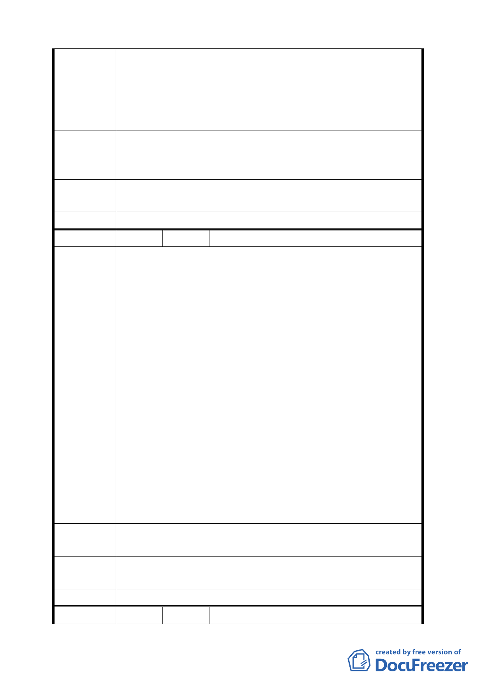

一、土地標示: 士林區翠山段二小段 43 地號
二、民國 68 年因變更為住宅區而高價購入土地之民眾,將因
陳情理由
再次變更為保護區而造成土地價值減損,長期投資效益
頓時形成泡沫,原本信賴政府規劃之土地政策,卻影響到
民眾權益,造成社會不公現象。
建議維持目前使用分區為住宅區,加強山坡地水土保持工作,
建 議 辦 法 且配合相關建築法令規範,仍可達成降低本區使用強度,落實
環境管理政策。
專 案 小 組 同編號 1。
審查結論
委員會決議 同編號 1。
編 號 9 陳情人 魏大凌等三人（住二十三）
住 23 土地開發歷程報告
一、自 貴府 68/2/12 北市<68>府工二字第 01786 號公告發布
實施『變更台北市都市計畫保護區（通盤檢討）案（內
政部都市計畫委員會 210 次會議通過部分）』後，民等陸
續價購取得住 23 土地，並積極整合，至 74/3/9 終獲本
區地主之一中央公教人員住宅輔建及福利互助委員同意
整體規劃開發。
二、幾經陳情終蒙 貴府 79/5/22 府工字第 79029302 號公告
陳情理由
辦理『修訂雙溪中央社區細部計劃（第二次通盤檢討）
暨擬定保護區變更為住宅區（住 23）細部計劃案』公展。
三、本案經都市計畫委員會專案小組多次審議，民等亦配合
提供本區之地質鑽探報告資料等，冀本案能早日完成都
市計畫程序。
四、嗣因中央社區居民於歷次聽證會抗爭施壓等，終使『擬
定保護區變更為住宅區（住 23）細部計劃案』暫時擱置。
五、本案業經土地所有權人諸多努力，惟未能完成，非不為
也，實不能也，敬祈 貴府體恤民困協助開發，毋任感禱。
建 議 辦 法 本案業經土地所有權人諸多努力，惟未能完成，非不為也，
實不能也，敬祈 貴府體恤民困協助開發。
專案小組
審 查 結 論 同編號 1。
委員會決議 同編號 1。
編 號 10 陳情人 林堉璘（住二十三、住二十四）
一〇